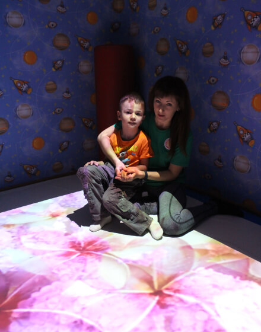

Наши процедуры
-
Общий массаж
Общий массаж с разработкой суставов назначается для:
- нормализации двигательной функции и повышения тонуса мышц;
- улучшения проводимости мышц;
- улучшения движения биологических жидкостей;
- предотвращения ограничений пассивных движений в суставах;
- нормализации метаболических процессов;
- улучшения общего состояния.
-

Логопедический массаж
Основными задачами логопедического массажа являются:
- нормализация мышечного тонуса, преодоление гипертонуса в мимической и артикуляционной мускулатуре;
- устранение гиперкинезов, синкинезий, девиации;
- стимуляция положительных кинестезий;
- улучшение качества артикуляционных движений;
- увеличение силы мышечных сокращений;
- активизация тонких дифференцированных движений органов артикуляции, необходимых для коррекции звукопроизношения.
-

Кинезиотейпирование
Тейпы, которые специалист наносит на кожу лица, шеи, грудной клетки ребенка, способствуют решению очень актуальных проблем, влияющих на речевое развитие:
- полуоткрытый рот, нарушение носового дыхания и гипотонус мышц ВНЧС;
- гиперсаливация (слюнотечение);
- инфантильный тип глотания;
- затруднение произношения из-за слабого тонуса мышц губ и щек;
- нарушение общей и мелкой моторики;
- тейпы помогают сформировать диафрагмальный тип дыхания;
- парезах и невритах;
- птозах (опущениях органа);
- комплексной реабилитации пациентов, перенесших инсульт.
Наклеенные тейпы будут «обращать внимание» головного мозга на неработающие мышцы артикуляционного аппарата, в результате чего мозг научится управлять этими мышцами и «заставит» их активно трудиться (при их гипотонусе) или расслабляться (при их гипертонусе).
-

Занятия на тренажерах
Во время занятий ЛФК и АФК при ДЦП:
- расслабляются нижние и верхние конечности;
- укрепляются мышцы живота и спины;
- сохраняется способность держать равновесие стоя;
- развиваются локомоторные движения, гибкость;
- развивается мелкая моторика рук, способность к произвольному торможению движений;
- снижается гипертонус мышц;
- улучшается координация движений;
- увеличивается амплитуда движений в суставах.
-

Физическая реабилитация
-
Водные процедуры
В нашем бассейне занятия проходят под руководством опытных сертифицированных инструкторов. В ходе занятий:
- укрепляется иммунная система;
- расслабляется нервная система;
- пропадает страх перед водой;
- снижается гипертонус;
- нормализуется сон;
- происходит закаливание организма;
- малыш получает положительные эмоции.
-

Билотерапия
С помощью билотерапии можно решить много задач:
- вывести человека из состояния уныния или депрессии;
- устранить стресс;
- создать позитивное настроение;
- активировать умственную деятельность;
- снять боль;
- снять соматическое напряжение за счёт физиоакустического эффекта;
- ликвидировать в мозге очаги «застойного» возбуждения;
- облегчить состояние психосоматических заболеваний;
- повысить эффективность выполнения различных психотерапевтических техник.
-
Музыкальная терапия
Полезность музыкотерапии в работе с детьми с ограниченными возможностями состоит в том, что она:
- помогает укрепить доверие и взаимопонимание между участниками процесса;
- помогает ускорить прогресс терапии, так как внутренние переживания легче выражаются с помощью музыки, чем при разговоре;
- музыка усиливает внимание к чувствам, служит материалом, усиливающим осознание;
- косвенно повышается музыкальная компетенция, возникает чувство внутреннего контроля и порядка.
-

Сенсомоторная интеграция
Интерактивная комната — это особым образом организованная среда, состоящая из множества различного рода стимуляторов, воздействующих на базовые органы чувств (зрение, слух, обоняние, осязание) и вестибулярные рецепторы. Предназначена для решения следующих задач:
- обучение на основе сенсорной стимуляции;
- социальной сети адаптации (например, детей с аутизмом);
- снятие мышечного и психоэмоционального напряжения;
- активизация различных функций нервной системы;
- стимуляция зрения, осязания, слуха.
-

Занятия с психологом
-

Занятия с логопедом
-

Занятия с педагогом-дефектологом
-

Биоакустическая коррекция
Биоакустическая коррекция — это способ, который заставляет мозг работать и налаживать старые «древние» связи. Ребенок слушает музыку, которая построена согласно его собственной электроэнцефалограммы. Она синхронизируется с работой мозга в режиме реального времени, вступает с ним в некий резонанс. Мозг слышит сам себя, т.е. свое эхо. Метод биоакустической коррекции показан детям:
- c нарушениями психического развития (задержка умственного развития, умственная отсталость, аутистический синдром);
- c нарушениями речевого развития (дизартрия, дислалия, ОНР, алалия, дисграфия, дислексия);
- c синдромом дефицита внимания и гиперактивностью;
- c неврозоподобными нарушениями (тики, энурез);
- при последствиях ОНМК, органического поражения головного мозга, черепно-мозговых травм;
- со сниженным слухом.
-
Физиопроцедуры
-

Пневмомассаж
Пневмомассаж предназначен для проведения циклического массажа верхних и нижних конечностей при профилактике и лечении сердечно-сосудистых нарушений, венозных и лимфатических расстройств, в т.ч. после операций, для предотвращения заболеваний, связанных с ограничением движения, а также для косметического (антицеллюлитного) и спортивного (восстановительного) массажа. Массаж проводится с помощью семисекционных манжет, одеваемых на руку или ногу, в которые подается сжатый воздух по установленной программе от блока управления. Показания к назначению:
- для проведения циклического массажа рук и ног при профилактике и лечении сердечно-сосудистых нарушений;
- с целью эффективного снятия психоэмоционального напряжения;
- для профилактики тромбоэмболии в ходе и после хирургических операций;
- для предотвращения профессиональных заболеваний, связанных с ограничением подвижности;
- для косметического (антицеллюлитного) массажа;
- для спортивного (восстановительного) массажа (восстановительная прессотерапия после тренировок);
- при проведении прессотерапии в комплексе коррекционно-оздоровительных мероприятий для детей-инвалидов (с ДЦП, с патологией опорно-двигательного аппарата, синдромом гиперактивности и т.д.).
-

Фармакопунктура
-
Имитатор подошвенной нагрузки
Имитатор подошвенной нагрузки «Корвит» — это уникальный тренажёр для механотерапии, созданный в России, и предназначенный для имитации опорной нагрузки на ноги. Показания к применению имитатора опорной нагрузки:
- гемипаретическая форма ДЦП;
- атонически-астатическая форма ДЦП;
- спастическая диплегия;
- эквинусная установка стоп у детей;
- отсутствие опорности стоп при хорошем соматическом и психическом состоянии ребёнка;
- отсутствие шаговых движений у ребёнка;
- вынужденная гипокинезия, вызванная тяжелым состоянием больного и невозможностью проведения ранней мобилизации.
-

Грязевые апплекации
Грязевые аппликации обладают регенерирующим, трофическим, противомикробным эффектом. Также у них есть бактерицидное действие, они способны улучшить кровообращение, стабилизировать жировой баланс и очищать кожный покров. Грязевые аппликации активно применяются в нашем Центре при лечении заболеваний нервной системы и опорно-двигательного аппарата. После применения данных процедур отмечается снижение спастики мышц, улучшение походки, увеличение объема движений в суставах.